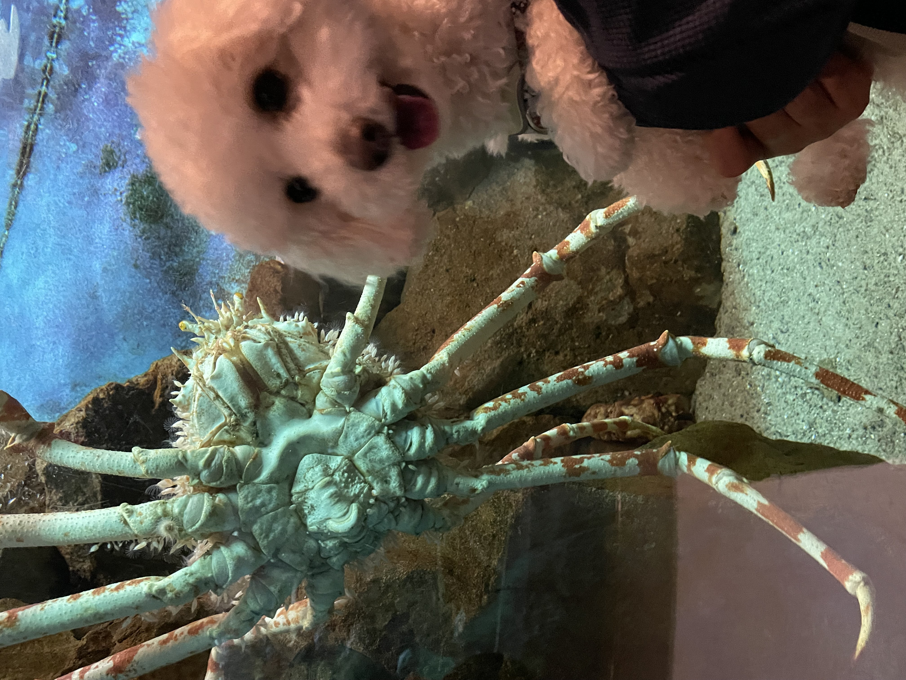

5つの質問に答えるだけで、あなたにぴったりの宿探しサイトがわかります

愛犬との旅行、宿探しはどうしていますか？
ペット可の宿を探すとき、どのサイトを使えばいいか迷いませんか？
わんたびでは、5つの簡単な質問に答えるだけで、
あなたの旅行スタイルや愛犬の状況にマッチした
宿探しサイトをご案内します。
▼ 下の質問に答えてください（複数選択OK）
🐾 質問回答による結果
あなたの回答にマッチした宿探しサイトをご案内します
※ 各ボタンは提携旅行サイトへのアフィリエイトリンクです。
実際の料金・空室状況・ペット受け入れ条件は各サイトでご確認ください。